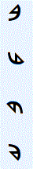
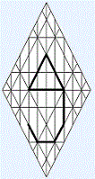

|  |
ב BetGematria and Numerology 2 |
|
 |
|
to conceive to conjure, imagine, theorize, postulate; to envision, formulate; to devise, invent to organize, revise, adapt, reform |
|
fabrication to build, construct, make, remake; to mold, shape, fashion to establish; to implement, utilize; to dig, shovel, scoop, carve, sculpt to bend, distort, conform; to trim, withdraw, fold, tuck an image, idol, invention; idolatry; superficiality; exterior |
|
to house to lodge; soul as house of the spirit; temple; ark; creation physical body, fetus, infant; flesh, form, shell; receptacle, repository house, home, dwelling, building; habitat, habitation; institution household, family, child, kin, tribe, peers |
|
to embrace to pair, match; to engage; to adopt, acclimate; to take in, hoard; to show, manifest; intentional; to prefer; to invite; to domesticate, tame; interiorization, introspection; congruence; personal; to anchor the prepositions in, at, on, among, within, into, with, by, of, through |
|
to include to agree; to conform; to accept, claim; to cherish, keep, coddle; to store, retain; stores, supplies; selfishness to assume; to prefer, further; parochial, partisan adverbs when, while, as, because |
|
to hear earlobe; to listen, pay attention, heed; receptivity; attentiveness; introspection; to notice; consciousness, awareness to respond, answer, echo |
|
to recoil to reject, withdraw; to spiral, fall away, backslide; to be demure, coy, superficial, self-absorbed passivity, inertia; segmentation to hide, conceal; to be uncovered, exposed, naked |
|
||||||||||||||||||||||||||||||||||
|
site |
book |
|||||||||||||||||||||||||||||||||